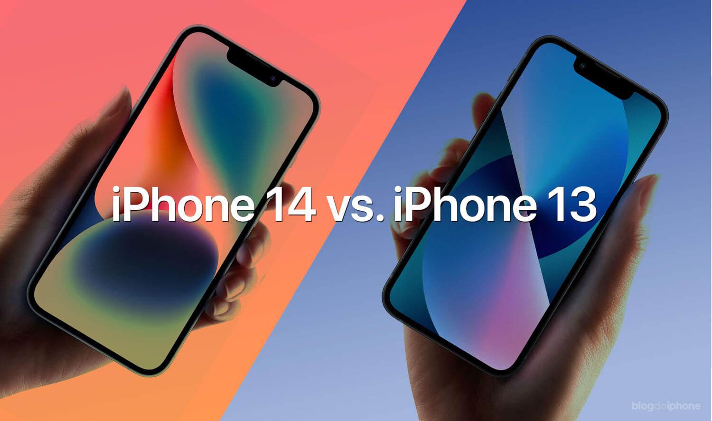

Ao que parece, o modelo mais básico do iPhone 14 não emplacou. Por isso, a Apple estaria planejando diminuir a produção do dispositivo — pelo menos é o que afirma uma nova reportagem da Bloomberg. O motivo da baixa procura seria o preço mais atrativo do iPhone 13, do ano passado, que é tão semelhante ao seu irmão mais novo a ponto do chip ser o mesmo.
A reportagem diz que “um aumento antecipado na demanda [do iPhone 14] não se materializou”, dessa forma a Apple estaria solicitando para que os fornecedores não produzissem mais o aparelho. Segundo a fonte mencionada pela Bloomberg, a empresa teria planos de produzir 6 milhões de iPhones a mais que no ano passado, em que mandou fabricar 90 milhões de unidades. Agora, esse plano estaria descartado. Ainda não há informações sobre a produção do iPhone 14 Plus. Isso porque, em alguns países, a Apple decidiu começar as vendas do modelo em 7 de outubro, um mês depois de seu anúncio. Por outro lado, o cenário parece ser diferente quando falamos sobre a linha Pro. Na reportagem, a Bloomberg diz que a Apple teria pedido à Foxconn que aumentasse a produção do iPhone 14 Pro em 10%. Isso, claro, teria algum fundamento, haja vista que foi nesses modelos em que a gigante de Cupertino realizou as principais mudanças. Os diferenciais da linha 14 Pro são a Dynamic Island, um conjunto de câmeras poderoso, com uma lente de 48 MP, um processador novo e o Always-On Display.
Nesta semana, a Apple anunciou a transferência de produção dos iPhones 14 da China para a Índia. O objetivo da empresa, segundo alguns analistas, é diversificar sua cadeia de produção. Esse comunicado marcou uma mudança fundamental na estratégia de fabricação de seus produtos, tendo em vista que, na China, os frequentes lockdowns relacionados à COVID-19 têm feito diversas fábricas pararem. Em entrevista ao CNN Business, Tarun Pathak, diretor de pesquisa da Counterpoint, disse que a produção dos aparelhos na Índia aconteceu mais cedo neste ano. Segundo ele, a empresa normalmente começa a fabricar as unidades no país cerca de sete a oito meses depois do lançamento. A transferência não é total, vale ressaltar. Inicialmente, espera-se que as fábricas indianas produzam apenas modelos de iPhone 14 e 14 Plus, cobrindo só 5% da produção para a empresa (cerca de 1 milhão de unidades por mês).